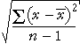

| racine de l'erreur quadratique moyenne = |  |
|---|
Distances du centre de la distribution
La racine l'erreur quadratique moyenne résume les distances de valeurs de données à partir d'une cible constante, k.
| racine de l'erreur quadratique moyenne = | |
|---|
L'écart type de population est une statistique de synthèse similaires qui résume les distances des valeurs du centre de leur distribution.
| écart type de population = |
|---|
| La déviation standard résume la propagation des valeurs dans les données. |
Écart type d'échantillon
L'écart type d'échantillon est plus souvent rencontré. La seule différence est que la somme des carrés des écarts est divisée par (n - 1) plutôt que n.
| écart type d'échantillon = s =  |
Quand vous lisez d'un écart-type dans un rapport, il est susceptible d'être l'écart type d'échantillon qui est prévu.
| En CAST, «déviation standard» le terme se réfère toujours à l'écart-type de l'échantillon. |
Il ya peu de différence pratique entre la population et l'écart type d'échantillon à condition que la taille de l'échantillon est assez grande. Même lorsque la taille de l'échantillon est petit, les deux définitions devraient vous conduire aux mêmes conclusions à propos de vos données. (Sinon, vous êtes probablement sur-interprétation de vos données!)
Illustration de l'écart-type
Le diagramme ci-dessous montre les valeurs 7 et représente leurs carrés des écarts (distances à la moyenne) par des carrés.
Le carré rouge a une aire égale à la superficie moyenne des carrés bleus.
| L'écart type de population est la longueur du côté de ce carré rouge. |
Sélectionnez Écart-type d'échantillon dans le menu pop-up. L'écart type de l'échantillon utilise (n - 1) = 6 au lieu de n = 7 dans le denominatory de la formule pour l'écart type de sorte qu'il est légèrement plus grand. Dans les ensembles de données plus grande, la différence est plus petite.
Faites glisser les croix de voir comment l'écart-type se rapporte à la valeur des données. (Notez que la moyenne des changements aussi quand une valeur est traîné.)
Si vous faites glisser le bas de la Croix pour le transformer en une aberration, vous remarquerez peut-être qu'il a une influence disproportionnée sur la déviation standard.
| L'écart type est fortement affectée par les valeurs aberrantes, il n'est donc pas un résumé robuste de propagation. |